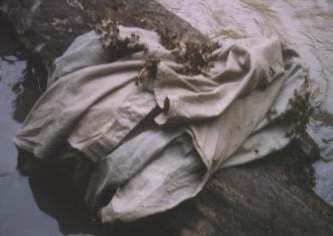
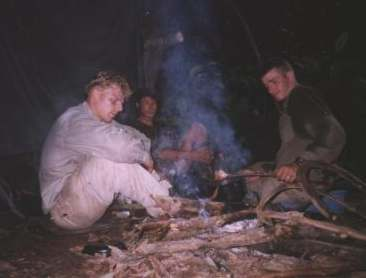

Als je 's morgens wakker wordt en de rivier blijkt zomaar ruim twee meter te zijn gestegen, dan is dat een behoorlijk indrukwekkend verschijnsel. Ondanks dat ik er al meerdere malen over gelezen had en we er goed op voorbereid waren, is het toch geweldig om mee te maken. Gelukkig hangt onze tent zo'n 5 meter boven het rivierwater wanneer dit laag staat.
Deze dag moest een mooie dag worden om te beginnen met ons vlot. Dit vlot moest ons door het wilde water weer terug brengen naar de bewoonde wereld. Zonder een vlot kunnen we absoluut niet terug komen; de kracht van het water zou ons met gemak kunnen verpletteren tegen de harde uitstekende rotsen. Ons plan om rustig aan het vlot te beginnen, werd volledig in de war geschopt door honderden wespen die het op ons hadden voorzien. Het begon 's morgens al: eerst zoemden er tientallen wespen om ons heen en al snel werden het er honderden! Vooral Richard, die er heel goed in is om zijn afvalstoffen via zijn poriën te lozen, werd door de wespen werkelijk afgelikt! Omdat ik ook aardig kan zweten, werd ik iets later ook het slachtoffer van een ware wespenplaag. Dit is onze straf voor het feit dat we ons de afgelopen dagen niet gewassen hebben! Richard was al naar de rivier gelopen en ik werd steeds zenuwachtiger: meer dan 100 van die zoemende beesten die in potentie dodelijk kunnen zijn. Ik kon nog net mijn camera pakken en een blok zeep en liep zo rustig mogelijk naar de rivier die zo'n 4 meter lager lag dan ons kamp. Richard stond al in de rivier en hij was bezig z'n overhemd voorzichtig uit te doen. Bij mij vloog een wesp mijn mouw in en ik voelde hem steken. Ik schrok me het apelazarus, maar het was waarschijnlijk vals alarm, want ik heb er geen last meer van gehad. Richard legde z'n overhemd op een boomstam die in de rivier lag; hij bleef verdacht rustig, alsof Ries het niet door had dat er nog zo'n 50 wespen op zijn hoofd zaten.
|  |
Richard's overhemd vol met wespen. |
We maakten plannen om hier zo snel mogelijk te vertrekken wanneer zou blijken dat we nog steeds aangevallen zouden worden door wespen. We zouden dan in rap tempo een 'voorlopig' vlot maken om in elk geval naar een nieuwe plek te kunnen drijven. Gelukkig nam de hoeveelheid wespen om ons heen langzaam af. Op ons kamp begon ik zo snel mogelijk met het maken van een vuurtje, want rook is een uitstekende insectenbestrijder. Het maken van vuur kostte weer erg veel inspanning met al dat natte hout. Ries en Steef gingen op zoek naar 'droog' brandhout en naar hout voor het vlot. Na 1,5 uur waren er enkele balken voor het vlot en was er wat nieuw brandhout dat ik dringend nodig had om het instabiele vuurtje aan te kunnen houden. Toen gingen we eten: drie pakjes indo-mie aan de kook brengen en daarna nog eens drie. Heerlijk!
Na de indo-mie hebben we met z'n allen het vuur verbeterd en wat stabieler gemaakt. Daarna hebben we nog een paar balken voor het vlot gezaagd. Dat bleek toch voor elk balkje weer een hele klus te zijn. Ten eerste is het hout over het algemeen zeer hard, zodat het zagen lang duurt. Ten tweede moeten er nog tientallen lianen en zijtakken worden verwijderd, omdat alles in elkaar verstrengeld is. Als een boompje bijna los is en we het los proberen te schudden, dan valt er van alles naar beneden: veel bladeren, maar ook allerlei ongedierte. Een hoed of een pet is in die situatie geen overbodige luxe! Nu is het al weer tijd om aan het eten te beginnen. Over enkele uren is het alweer pikdonker! Het filteren van het water gaat nu erg zwaar, terwijl we nog maar zo'n 100 liter gefilterd hebben. We hebben 4 filters mee die elk 400 liter moet kunnen filteren.
|  |
's Avonds bij het vuur. |
Het eten was voortreffelijk, dankzij Richards inzet! We aten rijst met sate-saus waarin zelfgeroosterde pinda's zaten. Verder zat er nog ui en heel veel knoflook doorheen. We rekenden uit dat we nog voor minstens 7 dagen goed te eten bij ons hadden. Daarna kunnen we ook nog enkele dagen leven op droge rijst met water. Na het eten verbeterde ik de constructie van ons tentzeil zodanig, dat het water bij zware regen keurig zou afdalen en zich niet op zou hopen in het zeil. Steven ontfermde zich over het vuurtje en maakte er een perfect stabiele licht- en warmtebron van! Ik kon nog even tijd vinden om wat in mijn dagboek te schrijven. Het blijkt dat we bijna een hele dagtaak hebben om alle zaakjes voor elkaar te krijgen: vuur maken, tent bouwen, water filteren, hout zagen, eten maken: echt druk! Zo afschuwelijk als de ochtend was met al die wespen, zo geweldig was de avond. Tot ongeveer 20:30 uur hebben we gezellig om het vuur gezeten, thee geleut, gelachen en plannen gemaakt.